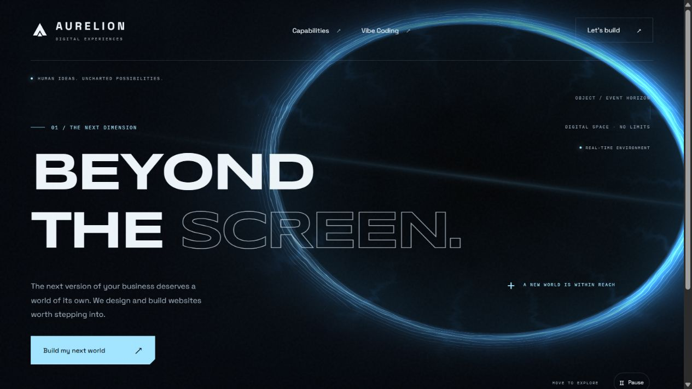

第 1 步（共 5 步）
网站还是系统？
先选对网站类型，再决定需要哪些工具和服务。
网站是用来展示的。系统会记住东西，还会帮你做事。简单判断：如果它要保存别人填进去的东西（预约、订单、答案），那就是系统。
先看看，你的网站可以是什么样
从喜欢的风格开始。这是我们网站体验示例的六种设计方向，打开后可以亲自体验动画与互动。
每个示例都会在新标签页打开。


网站
几个页面、一些照片，加一点小程序。什么都不保存。便宜、快，而且不容易坏。
你的电脑项目文件夹。AI 在这里干活。
GitHub私人的网上备份，保留所有修改记录。
主机Railway、Cloudflare……每次保存都会重新发布。
访客打开你的网址。
系统
开头一样，再多三个部分：一个干活的服务器，一个负责记住的数据库，还有处理付款、AI 或消息的外部服务。每多一个部分，就多一个账号、多一把密钥、多一笔月费。
页面别人看到和填写的地方。
服务器检查登录、做事、照你的规则来。
数据库记住用户、预约、订单。
外部服务付款、AI、电邮、WhatsApp。
真实例子：Aurelion Insights 就是一个系统。客人填问卷，AI 写报告，他们登录来看报告，再在网上付款。页面、服务器、数据库、AI 服务和付款服务一起配合。
六种常见类型
| 类型 | 例子 | 需要什么 | 难度 |
|---|---|---|---|
| 资讯网站 | 教练、公司简介、作品集、活动页面 | 只要主机 | 简单 · 一个下午 |
| 预约系统 | 诊所、美发店、课程、房间 | 服务器、数据库、员工登录、提醒 | 中等 |
| 网店 / 付款 | 产品、门票、付费报告 | 服务器、数据库、付款账号 | 中等 · 要仔细测试 |
| 员工工具 / 记录表 | 客户名单、任务、库存、出勤 | 服务器、数据库、登录、备份 | 中等 |
| AI 工具 | 用你的资料回答的聊天机器人、问卷 → AI 报告 | 服务器、AI 账号（用多少付多少） | 中等到进阶 |
| 自动化 | 每日报告、生日电邮、跟进客人 | 定时任务、电邮/WhatsApp 账号 | 简单到中等 |
先做小，再慢慢做大
- 第一版可以只是网站。Life Garden 先在 WhatsApp 上卖：没有数据库，没有付款系统，一个下午就上线。
- 等真的有人在用，再加系统的部分。有订单进来了，才加网上付款。有回头客了，才加登录。
- 先叫 AI 给你计划。开头的提示词会让它在动手之前，先列出要哪些部分、哪些账号，每个月要花多少钱。